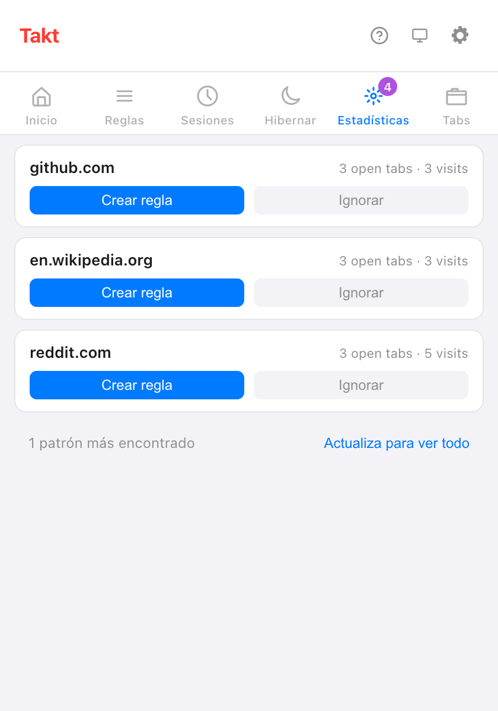

Respuesta corta: abre el panel Estadísticas del popup de Takt. Cada tarjeta es un sitio que usas mucho y que aún no tiene regla. Haz clic en Crear regla, compruébala con Vista previa de pestañas coincidentes y guarda.
- Las sugerencias salen de tus pestañas abiertas y de tus visitas recientes, contadas en tu dispositivo.
- Sugerir reglas le pide a la IA local de Chrome que agrupe tus sitios abiertos en reglas.
- El Probador de reglas y el número de coincidencias te muestran si una regla hace lo que querías.
¿De dónde salen las sugerencias de reglas?
Takt está atento a los sitios que claramente merecen un grupo. Hay tres fuentes:
| Fuente | Sugiere un sitio cuando | Dónde lo ves | Plan |
|---|---|---|---|
| Pestañas abiertas | Hay 3 o más pestañas suyas abiertas o hibernadas | Popup → Estadísticas, Opciones → Rules | Free: 3 tarjetas a la vez |
| Visitas recientes | Lo has abierto 5 veces o más, o en visitas repartidas en 2 días o más, en los últimos 7 días | Popup → Estadísticas, Opciones → Rules | Free: 3 tarjetas a la vez |
| Sugerencias de IA | Haces clic en Sugerir reglas | Opciones → Rules | Free, hasta el límite de 5 reglas |
Nunca se sugiere un sitio que ya cubre una regla de tipo domain o contains. Tampoco nada que hayas descartado.
¿Cómo funciona el panel Estadísticas?
Cada tarjeta muestra un sitio y por qué aparece, por ejemplo "3 open tabs · 3 visits". Tiene dos botones:
- Crear regla abre el editor de reglas con el sitio ya rellenado. No se guarda nada hasta que haces clic en Guardar.
- Ignorar oculta la tarjeta. Las sugerencias descartadas siguen apareciendo en la página Rules de las opciones, donde puedes restaurarlas.
Los usuarios del plan Free ven las 3 primeras tarjetas y una línea como "1 patrón más encontrado". Premium (3 $/mes o 30 $/año) las muestra todas.

¿Qué registra Takt para hacer sugerencias?
Solo nombres de sitio y recuentos. En el modo Reglas, cuando una pestaña nueva no coincide con ninguna de tus reglas, Takt suma uno al recuento de visitas de ese sitio. Guarda:
- el dominio, un recuento de visitas y la primera y la última vez que lo vio;
- solo las entradas de los últimos 7 días, y como mucho 1.000 sitios;
- nada de las ventanas de incógnito.
Se guarda en el almacenamiento local de extensiones de Chrome y nunca sale de tu navegador. Clear tab pattern history, en Settings, lo borra. Si concedes el permiso opcional de historial de navegación, las cifras de visitas de cada tarjeta salen del propio historial de Chrome de los últimos 90 días.
¿Qué son las sugerencias de reglas con IA?
En la página Rules de las opciones, Sugerir reglas envía la lista de sitios de tus pestañas abiertas a la Prompt API integrada en Chrome. El modelo se ejecuta en tu dispositivo, agrupa los sitios por tema y pone nombre a cada grupo. Solo entran nombres de sitio: ni títulos ni contenido de las páginas.
- Cada sugerencia tiene Añadir regla y Descartar. Añadir regla la guarda al momento, activada.
- La primera vez puede tardar un minuto mientras Chrome prepara el modelo.
- En un dispositivo que no puede ejecutar el modelo, verás "Las sugerencias de IA no están disponibles en este dispositivo."
- En el plan Free, recibes tantas sugerencias como huecos de regla gratuitos te queden, de 5.
¿Cómo pruebo una regla antes de fiarme de ella?
Hay dos herramientas en la página Rules de las opciones:
- Probador de reglas. Pega una URL y, si quieres, un título de página. Takt responde "Matches: regla → grupo" o "Sin regla coincidente". Marca Incluir reglas desactivadas para probar las reglas que has desactivado.
- Vista previa de pestañas coincidentes. Dentro del editor de reglas, muestra las pestañas abiertas que capturarían tus condiciones aún sin guardar, en todas las ventanas. Si no coincide ninguna, dice "Ninguna pestaña coincide con esta regla."

¿Cómo sé que una regla funciona?
Cada regla de la lista muestra cuántas pestañas ha llevado a su grupo. Una pestaña cuenta cuando la regla la saca de "sin agrupar".
La vista Stats añade los totales: pestañas organizadas, pestañas por día, tu regla principal y tus 10 reglas más usadas. Una regla que se queda en cero durante una semana merece un segundo vistazo con el Probador de reglas. Restablecer estadísticas pone los recuentos a cero.
¿Puedo crear una regla desde la página en la que estoy? Premium
Sí. Haz clic derecho en la página y elige Crear regla desde esta pestaña. Takt abre el editor de reglas con un patrón glob como *://github.com/* ya rellenado. Revísalo y guarda.
Lo que las sugerencias no hacen
- Van sitio por sitio. Takt no te sugerirá "todas las pull requests" de todos los repositorios. Para eso, escribe una regla glob o regex (Premium).
- Las sugerencias por pestañas abiertas necesitan 3 pestañas de un mismo sitio. Con dos no aparece ninguna tarjeta.
- Las sugerencias de IA dependen del modelo local de Chrome. Puede que los equipos antiguos o poco potentes no las reciban.
- Las sugerencias alimentan el modo Reglas. Si prefieres no escribir reglas, prueba la agrupación por categoría o con IA.
Abre unas cuantas pestañas, como siempre. Deja que Takt te diga qué regla escribir.
Añadir Takt a Chrome, gratisPreguntas frecuentes
¿Cómo decide Takt qué reglas sugerir?
Un sitio entra con 3 o más pestañas abiertas, o con 5 visitas (o visitas en 2 días) en los últimos 7 días, siempre que no lo cubra ninguna regla.
¿Las sugerencias de reglas son gratis?
Sí. Los usuarios del plan Free ven 3 tarjetas de Estadísticas a la vez y sugerencias de IA hasta el límite de 5 reglas. Premium (3 $/mes o 30 $/año) las muestra todas.
¿Las sugerencias de reglas con IA envían mis pestañas a algún sitio?
No. Al modelo local de Chrome solo llegan los nombres de sitio de tus pestañas abiertas. Consulta cómo mantiene Takt tus datos en local.
¿Puedo recuperar una sugerencia descartada?
Sí. La página Rules de las opciones muestra las sugerencias descartadas, y ahí puedes restaurarlas.